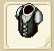
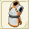
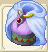

| 服作成 | ||||
| 画像 | 名称 | 性能 | 材料 | |
| 台湾名表示 | ||||
| 服作成Lv1 | ||||
| 旅人の服 | DEF+7〜+14 AVD+5 |
バルサ10 鹿の皮20 麻4 |
||
| 旅人之服 | ||||
| アーミングダブレット | DEF+10〜+21 AVD+5 |
銅3 鹿の皮20 麻3 木綿2 |
||
| 保護衣 | ||||
| 服作成Lv2 | ||||
| フェザースーツ | DEF+14〜+28 AVD+5 |
鹿の皮20 麻11 木綿2 |
||
| 羽毛裝 | ||||
| レザースーツ | DEF+18〜+35 AVD+5 |
銅2 鹿の皮20 麻5 木綿5 フェルト4 |
||
| 皮裝 | ||||
| 服作成Lv3 | ||||
|  | ハードレザースーツ | DEF+21〜+42 AVD+5 |
銀3 鹿の皮20 麻5 木綿5 フェルト6 |
|
| 硬皮服 | ||||
| チェインスーツ | DEF+25〜+51 AVD+5 |
鉄15 銀5 鹿の皮20 コットン2 |
||
| 鎖鏈裝 | ||||
| 服作成Lv4 | ||||
| シポン | DEF+28〜+56 AVD+5 |
銀5 鹿の皮20 コットン10 フェルト7 |
||
| 布甲 | ||||
| アクトン | DEF+32〜+63 AVD+5 |
金4 鹿の皮20 コットン10 フェルト10 |
||
| 襯甲 | ||||
| クイーンブレス | RCV+2〜+5 CRI-1〜+1 CTR-1〜+1 HIT-1〜+1 AVD-1〜+1 クエストで使用 |
純銀5 銀1 金1 チタン鉱石20 フローズンアイリス20 |
||
| 服作成Lv5 | ||||
| オベール | DEF+35〜+70 AVD+5 |
鉄10 金5 鹿の皮20 コットン6 綿端5 |
||
| 環服 | ||||
| オクトン | DEF+39〜+77 AVD+5 |
銀5 白金5 鹿の皮20 コットン10 綿端5 |
||
| 士兵護衣 | ||||
|  | シュテンスーツ | DEF+37〜43 RSS+15〜18 盗みスキル使用時に ダメージを与えられる |
絹4 金7 純銀3 アルマイト4 ぐみの木20 |
|
| 功夫裝 | ||||
| 服作成Lv6 | ||||
| オベルジョン | DEF+42〜+84 AVD+5 |
鉄10 銀7 白金5 鹿の皮20 コットン10 |
||
| 長索錐衣 | ||||
| サイクラス | DEF+46〜+91 AVD+5 |
鉄15 金5 白金5 鹿の皮20 コットン10 |
||
| 索錐上衣 | ||||
| 服作成Lv7 | ||||
| ブラッドコート | DEF+49〜+99 AVD+5 POI+8 STN+8 |
コットン20 セレーネ糸10 ベラドンナの血1 |
||
| 超級衣服 | ||||
| ボーンフォーム | DEF+53〜+105 AVD+5 |
白金5 コットン5 絹5 セレーネ糸10 |
||
| 骨衣 | ||||
| 水龍の服 | DEF+29 AVD+80 |
タイム20 マイティナイト2 魔族のクリスタル2 擦り切れた服1 |
||
| 水龍之服 | ||||
| 服作成Lv8 | ||||
| スタッフジャンパー | DEF+96〜+112 AVD+5 称号『こううんなひと』 |
ジェノーバスリード20 地水火風のクリスタルのかけら50ずつ |
||
| 疾風之衣 | ||||
| ジャケース | DEF+86〜+119 AVD+5 |
鉄10 ミスリル銀5 コットン10 絹10 ジェノーバスリード5 |
||
| 歩兵戰衣 | ||||
| ポーンフォーム＋ | DEF+87〜+114 AGL+10〜+20 AVD+5 |
ミスリル鋼13 絹15 アルパネススリード10 ブルードラゴンの鱗20 マジカルキャロット20 |
||
| 獸骨之衣+ | ||||
| 服作成Lv9 | ||||
| セイラー | DEF+112〜+133 AVD+5 |
レグネシウム1 木綿10 綿端10 ジェノーバスリード5 アルパネッサ10 |
||
| 勇者之衣 | ||||
| 甚平 | DEF+95 HIT+2 AVD+15 |
絹10 ジェノーバスリード10 アルパネッサ15 誓いの証1 魔族のクリスタル1 |
||
| 女神之衣 | ||||
| 服作成Lv10 | ||||
| ディヴァウト | DEF+137〜+147 AVD+5 |
オリハルコン1 コットン10 絹10 ジェノーバスリード10 カシミア10 |
||
| 不死鳥之服 | ||||
| ソウルシャウト | DEF+119 AVD+5 HIT+2 気功弾消費FP10%減 |
絹20 カシミア15 ベラドンナの血1 審眼1 魔族のクリスタル4 |
||
| 靈魂之服 | ||||
| 服作成Lv11 | ||||
| ツァディーラ | ATK+23 DEF+132〜207 HIT+6 AVD-5 |
アルパネススリード10 アルマイト5 レグネシウム6 ダマスクス鉱6 ランドクローラーの甲殻2 |
||
| 海洋之服 | ||||
|  | コフゥート | DEF+120 RCV+11 CRI+5 |
カシミア10 アルマイト9 シングロール40 レグネシウム13 フレイムスピリッツ2 |
|
| 幻想之服 | ||||